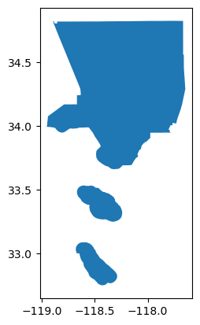
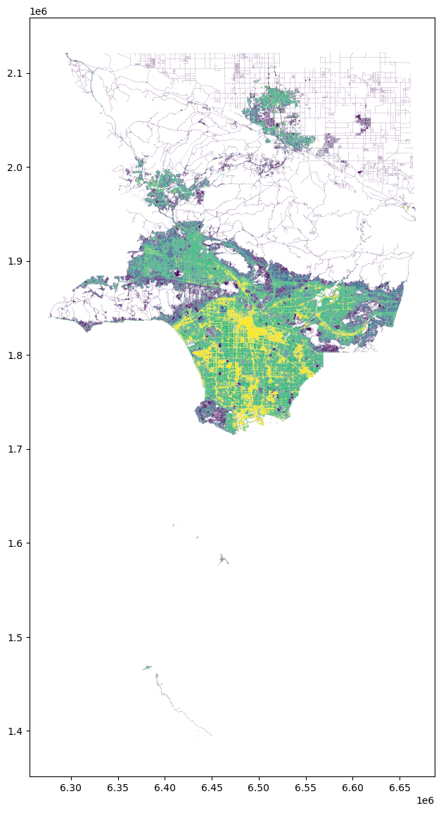
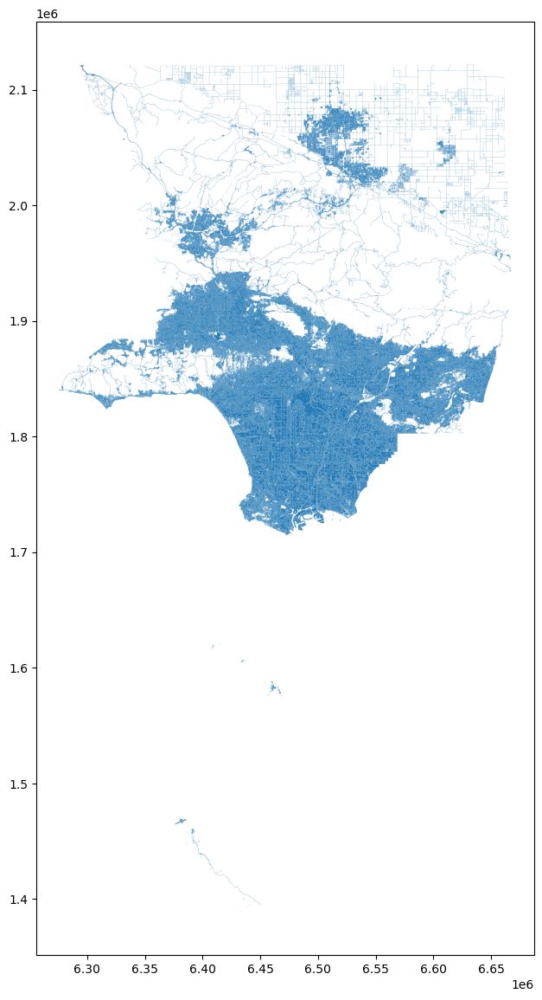

Extracting Urban Features from Raster Data¶
import matplotlib.pyplot as plt
import rasterio
from tobler.dasymetric import extract_raster_features
%load_ext watermark
%watermark -v -d -u -p tobler,geopandas,rasterio
Last updated: 2026-04-10
Python implementation: CPython
Python version : 3.14.4
IPython version : 9.12.0
tobler : 0.14.0
geopandas: 1.1.3
rasterio : 1.5.0
Fetching boundary data on the fly¶
We’ll use osmnx to grab a geodataframe of the UK boundary
import osmnx as ox
Extracting raster features¶
When interpolating data like population counts, a common strategy for improving accuracy is to incorporate ancillary data that can improve estimation by masking out uninhabited areas. A commonly-used data source for this purpose is land use/land cover (LULC) data collected from from remote sensing and satellite imagery. But these data can also be difficult to work with because they’re often distributed in large raster files that can be difficult to process alongside polygonal vector data. To assist, tobler provides the extract_raster_features function that consumes raster data and converts (a subset) of pixel values into polygon features represented by a geopandas GeoDataFrame.
As an example, consider Copernicus which provides global, annual LULC data at a 100m pixel resolution. According to their documentation “Urban / built up” areas are denoted with the value 50.
Copernicus data now requires registration
Note: the raster doesn’t cover the whole country, so we see the hard edge appear on the eastern side. To do this properly, we could run this function again with the next raster tile from Copernicus, then concatenate the results
Extracting development intensity¶
In addition to copernicus, other data sources may contain additional or more precise data. For example, the National Land Cover Database (NLCD) provides land-use classification for the USA at a 30m pixel resolution. LULC classification in NLCD is also more detailed, with four categories of developed land, with different cell values denoting different intensities
la = ox.geocode_to_gdf("los angeles county")
la.plot()
<Axes: >

la = la.to_crs(6424)
Now we’ll call extract_raster_features again, but this time we’ll read a compressed version of NLCD data from the spatialucr quilt bucket and extract the values 21, 22, 23, and 24 which represent developed land of different intensities
with rasterio.Env(AWS_NO_SIGN_REQUEST="YES"):
urban_la = extract_raster_features(
la,
"s3://spatial-ucr/nlcd/landcover/nlcd_landcover_2011.tif",
pixel_values=[21, 22, 23, 24],
)
urban_la.info()
<class 'geopandas.geodataframe.GeoDataFrame'>
RangeIndex: 374259 entries, 0 to 374258
Data columns (total 2 columns):
# Column Non-Null Count Dtype
--- ------ -------------- -----
0 value 374259 non-null float64
1 geometry 374259 non-null geometry
dtypes: float64(1), geometry(1)
memory usage: 5.7 MB
Since NCLD is a fairly high-resolution raster and LA county is large, the resulting geodataframe
urban_la.head()
| value | geometry | |
|---|---|---|
| 0 | 21.0 | POLYGON ((-2057235 1555455, -2057205 1555455, ... |
| 1 | 23.0 | POLYGON ((-2057115 1555425, -2057085 1555425, ... |
| 2 | 21.0 | POLYGON ((-2057175 1555425, -2057115 1555425, ... |
| 3 | 22.0 | POLYGON ((-2057115 1555395, -2057085 1555395, ... |
| 4 | 22.0 | POLYGON ((-2057055 1555395, -2056995 1555395, ... |
Since we extracted multiple pixel types, the values in this geodataframe differ, and plotting the geodataframe reveals how development varies across LA county
urban_la = urban_la.to_crs(6424)
fig, ax = plt.subplots(figsize=(20, 14))
urban_la.plot("value", ax=ax)
<Axes: >

From here, these data can be used to clip source features prior to areal interpolation or used in additional data processing pipelines. Alternatively, we might have extracted water and forestry features we know aren’t inhabited, and used the resulting features in reverse
If you want to extract features from multiple cell values but don’t need to represent variation, you can pass collapse_values=True, which will generate a geodataframe with fewer rows. As an example, if we wanted to extract the area in LA county that is at least 25% impervious surface, but we only care whether the area is impervious or not (regardless of the level of imperviousness) we could do the following.
Here, I’ve downloaded a different product from NLCD that defines imperviousness, and we’ll extract all cell values between 25 and 100 but collapse the values, so we end up with a discrete representation of imperviousness
with rasterio.Env(AWS_NO_SIGN_REQUEST="YES"):
impervious_la = extract_raster_features(
la,
"s3://spatial-ucr/nlcd/impervious/nlcd_impervious_2011.tif",
pixel_values=list(range(25, 101)),
collapse_values=True,
)
impervious_la.head()
| geometry | |
|---|---|
| 0 | POLYGON ((-2057115 1555425, -2057085 1555425, ... |
| 1 | POLYGON ((-2057025 1555395, -2056995 1555395, ... |
| 2 | POLYGON ((-2056965 1555365, -2056935 1555365, ... |
| 3 | POLYGON ((-2056935 1555335, -2056905 1555335, ... |
| 4 | POLYGON ((-2056845 1555335, -2056815 1555335, ... |
impervious_la.info()
<class 'geopandas.geodataframe.GeoDataFrame'>
RangeIndex: 35217 entries, 0 to 35216
Data columns (total 1 columns):
# Column Non-Null Count Dtype
--- ------ -------------- -----
0 geometry 35217 non-null geometry
dtypes: geometry(1)
memory usage: 275.3 KB
fig, ax = plt.subplots(figsize=(20, 14))
urban_la.plot(ax=ax)
<Axes: >
